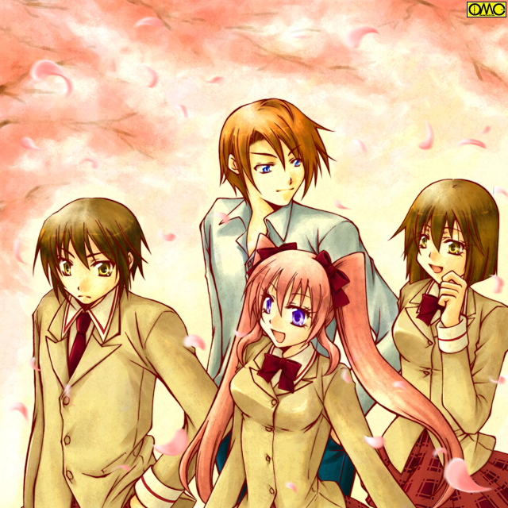

第１話「Ｗｉｌｄ Ｈｅａｖｅｎ」
春眠、暁を覚えず。
ベッドの中の少女もすやすやと眠り続けていた。
ピンク色の可愛いネグリジェ。プロポーションはまだまだ子供だが、同世代ではスタイルのいいほうに入る。
顔はもう美少女と断言していい。
きれいな球体の頭部。
カールした長いまつげ。
白く、それでいて健康的な肌。腰に達するふわふわした長い髪。
少年をかたどったぬいぐるみを抱きしめて幸せそうに
「ゆうすけぇ……だいすきよぉ…」
寝言とは言えど大胆に愛の告白をする。その声すら可愛らしい。
その様子を見ていたのが三人の「メイド」だ。
二人は一般に「メイド」といわれて連想する濃紺のワンピース。スカート部分はふくらはぎに達する長さ。
金髪のメイドはいわゆるアメリカンメイド。大きく開いた胸元。膝丈のスカート。
「どうしましょう…まりあお嬢様。とっても気持ちよさそうなんですけど」
茶色いウェービーな長い髪をしていた、眼鏡をかけたメイドが困ったように両脇の同僚に視線を送る。一番小柄な娘だ。
「どうもこうもないだろ。八重香。遅刻するからたたき起こしてやるのがメイドの努め」
一番大柄な金髪のショートカットのメイドが、力こぶしを作る。
「待ちなさい。陽香。お嬢様はたぶん優介さんと一緒の夢を見ているわ」
真ん中できっちりと分けたストレートロングが背中に達する中背のメイドが制止する。
「だからなんだってんだ。雪乃」
「せめてその夢にあわせて起こして差し上げましょ」
イタズラっぽく笑うと、長い髪をかきあげながら顔を「お嬢様」に近づける。その耳元で男の声色をつかって
「僕も好きだよ。まりあ」
そう囁くなり耳の穴に息を吹き込む。
「きゃあああああっ！？」
さすがにたまらず。夢から現。一気に上半身をベッドの上に。それにむかい
「「「おはようございます。まりあお嬢様」」」
声を揃えてメイドたちが朝の挨拶。それで自分がどう起こされたか察しがついた美少女。
「あ……あなたたちねぇ。起こすんならもうちょっとまともに」
「エルボーでも落としゃよかったか？」
「陽香（ようか）さん！！」
すっかり目の醒めたまりあの甲高い声が響く。
「さぁ。お嬢様ぁ。シャワー浴びていらしてくださいねぇ」
おっとりとした口調の竹芝 八重香が強引にまりあを引っ張る。
「ちょ…ちょっと。それくらい姫子じゃあるまいし一人で出来るわよ。大体二人だけで住むつもりでこの家に来たのに何であなたたちまで住み込みで」
「お父上からの命令です」
「ああ。お嬢様が羽目を外さないようにしないとな」
「ガマンしてくださいねぇ」
三人は家事担当であり、お目付け役であった。
「……」
まりあは諦めて深く息を吐く。
「……わかったわよ。行くから一人にさせて。着替えるから」
「お早く願います」
とんでもない方法でたたき起こした雪乃の言葉で三人は部屋を後にする。
メイドたちを追い出すとまりあは先に窓を開けに掛かる。新鮮な空気を取り込むのが目的。
ネグリジェ姿のまま窓を開ける。
向かいにも窓。隣家の窓。そして……少年が朝日を見ていた窓。
少年。そう断言することが出来るのはパジャマから除く胸の平たさゆえ。
女性の胸が薄いのとは違う。男性のそれだ。
こうまで言わないと男物パジャマを着ていても女性と間違えそうな容姿だった。
その少年の姿を見るなり、彼女は一番の笑顔を浮かべる。
「おはよう。優介」
「…………」
その端正な顔に不似合いなしかめっ面になると「優介」は窓をいきなり閉じてしまった。
「ちょ…ちょっと。何よそれ！」
朝も早いのに甲高い声でわめき散らすまりあ。美少女が台無しだ。
シャワーを浴びて着替えを済ませた。
丸襟のスクールブラウス。赤いチェックのプリーツスカート。ベージュのベスト。首には赤いリボンが。
ブレザーの色は白。
それが彼女の通う蒼空高校の女子制服だった。
着替えたころには朝食の準備が整っていた。
ダイニングキッチンには先客が既にいて朝刊を読んでいた。彼女の足音に気がついて顔を上げる。
これまた整った顔立ちの青年だった。まりあと似ている。彼は新聞をおろす。そしてにっこりと微笑んで挨拶をする。
「おはよう。まりあ」
「おはようございます。お兄様」
高嶺秀一。２０歳。大学生。まりあの兄だった。
この家には秀一とまりあと三人のメイド。それが住人であった。
両親は健在。だがまりあは親と離れてこの家に住むことを強く望んだ。
以前の住人がこの家を売りに出した時に、即座に買い取らせたほどである。
それほどまでにこの家に拘る理由があった。一人にしておいたら暴走しかねない。
そのため保護者の意味もあり兄とメイドたちも同居である。
「今日から二年生だね」
「ええ。後輩も出来るし、きちんとしないといけませんわ。２１日になれば私も１７才ですし」
「がんばっているしね」
朝食を採り終えて鏡に向かう。髪を丁寧にブラッシング。
それから後方の左右一房ずつに分け、ゴム。そしてリボンでくくる。いわゆるツインテールと呼ばれる髪型だ。
顔や髪型。服装をチェックしていたらチャイムが鳴った。
「優介！？」
嬉しそうな表情で玄関へと。
ドアの窓から確認すると彼女と同じ制服の女の子と、その男子版の制服を着ていた少年がいた。
まりあは迷わずドアを開く。そのころには玄関に兄。秀一もやって来ていた。
「おはよう。優介。亜優（あゆ）」
「おはよう。まりあ。秀一さん」
「おはようございます。秀一さん」
「やあ。おはよう。優介君。亜優ちゃん」
短いストレートを切り揃えた亜優と呼ばれた少女は、優介と瓜二つだった。
優介の方が男と思えない女顔だったのもあるがそっくりである。
ただ華奢な肩と豊かな胸元が彼女の性別を物語る。甲高い声もそれを強調。
優介の方は男子制服。
ブレザーのデザインは男女の差はあるものの、一目で同じ学校の制服とわかる。
前は開いていた。ベストはつけていない。下は普通の黒い学生ズボン。
はっきり言うとこの少年には少女たちのまとっている女子制服の方がよほど似合う。
それほどまでに女性的な印象の少年だった。
そしてこれまた女性的ににこやかに笑いながら青年に挨拶した。
気のせいか頬の赤い美少年。
まりあと窓辺でやり取りした時とは雲泥の差の笑顔だった。
亜優と優介は二卵性双生児だった。亜優が姉であるが、それは戸籍の上だけでまったく同等である。
「それじゃ行ってくるから」
「行ってらっしゃいませ」
メイドたちに留守を任せて高嶺兄妹はバス停へと向かう。
移動中、秀一ににこやかに笑顔で話しかける優介。
まりあを相手にした時の仏頂面がウソのようだ。
かなりの女顔のためまるで女の子のような愛想のよさを感じる。
秀一も笑顔で相手をしている。
その前列。まりあと亜優。二人は顔を見合わせる。そしてコクリと頷きあう。
「ねぇ。お兄様」
「なんだい。まりあ」
実の妹相手でも同じような爽やかな笑顔の秀一。一方では会話中に割り込まれて不機嫌そうになる優介。
「亜優が話があるんだって」
「へえ。なんだい。亜優ちゃん」
「は、ハイ」
ほんのりと頬を染めた亜優が秀一と会話を始めてそのまま横に。
そして取られた形の優介を引っ張るまりあ。
「なにすんだよ？」
「いいからいいから。『お姉ちゃん』のためにここは譲って上げなさい」
水木亜優は高嶺秀一のことが好きだった。
そしてその妹・まりあは親友で、亜優の「弟」優介を好きだった。
利害は一致している。共同戦線を張った。
毎朝こうして合流して亜優には秀一との時間を。
そして自分は優介との時間を得るのが目的だ。
優介とまりあ。二人並んで歩く。
（さあ。これからが本番よ）
彼女は笑顔で話しかける。好きな男相手なのだ。笑顔も簡単に出る。
「今日から二年生ね」
「……ぼくもお前も追試受けてないだろ」
赤点取ってないのだから留年はない。そういう意味だ。
それはそれとしても恐ろしくつっけんどんな言い方。
普通なら女子相手なのだからもう少し愛想良くなりそうなものだが…
（めげちゃダメ！）
「そ……そうよね。私ったら。うふふふ」
可愛らしい声と笑顔だが見ていて痛々しいほど空回り。
「私たち、同じクラスだといいわね」
「それだけは絶対嫌だ」
「…………」
これでは会話の続けようがない。まりあの笑顔は凍りついてしまった。
さらに優介はそっぽを向いている。桜を眺めているようにも見えなくはないが。

このイラストはＯＭＣによって作成されました。
クリエイターの藤本渚さんに感謝。
目的地のバス停についてしまった。まるで会話がはずまなかった。
まりあと同じ蒼空高校の制服をまとった少女が、自宅から自転車を押しながら出てきた。
隣の家からも優介と同じ制服の少年が。
少女は長い黒髪をしていた。髪の毛先が丸まり背中にまとわりつく。
前髪もかなり長い。黒渕のメガネの上に掛かってしまい、ほとんど素顔がわからない。
ただメガネから下の整った顔立ちを見ると、顔全体も期待できる。
制服はあっていないのかぶかぶかな印象がある。特にウエストがゆるゆる。
プリーツスカートはきちんと穿けているので、上だけ特に緩めのようだ。
「おはよう。風見くん」
硬い印象のあった彼女だが呼びかけるときは柔らかいものに。
「よう。おはよう。シホ」
風見と呼ばれた少年のどこが目立つと言えばその赤い短髪。しかもツンツンと逆立っている。
顔のパーツとしては外国人を思わせるたれ気味の目。そのせいか優しい印象がある。
しかし高めの身長と引き締まった肉体が身体能力の高さを物語っている。
「風見君。もう高校二年生なんだから、いつまでも子供みたいな呼び方はしないでください」
せっかくの可愛らしい雰囲気を自分で打ち消した。きつい言い回し。
「硬いこと言うなよ。シホ。幼なじみなのに今更『槙原詩穂理』なんて呼び方できるかよ」
「フルネームはいりません。それだとわたしも『風見裕生くん』と呼ばないといけませんから」
毅然として言い放つ。裕生は詩穂理の堅物ぶりに呆れてしまう。
「はいはい。それじゃ行こうぜ。二年の初日に遅刻じゃ様にならねえからよ」
彼は緑色のマウンテンバイクにまたがるとあっという間に走り出す。
置いていかれた形の詩穂理は慌てて赤い自転車にまたがるが危なっかしい走りだ。
「ま…待って…待ってよー。ヒロくーん」
思わず幼稚園のころの呼び方をしていた。
（はぁ……アニキの鈍さは見てていらいらしてくるわ……）
三つ編みお下げを二つ前方にたらした少女が風見家の窓から眺めてため息をついていた。
とある駅にて。とんでもない巨漢の高校生が人目を集めていた。
身長１９５センチ。体重１００キロ。時代遅れのリーゼント。
無表情だが他者を威圧するには充分だった。
ブレザーよりは「学ラン」がよく似合いそうだった。できれば高下駄がほしいくらいだ。
傍らには対照的に小柄な少女。彼女もアイボリーのブレザーを着用している。
リボンがことさら大きく見える。
髪型はショート。それなのにあまりアクティブには見えないのは、少女の女性的な印象のせいだろう。
「なんだか美鈴たち注目されちゃってるね。大ちゃん」
自己代名詞を使わずに自分を名前で呼ぶ辺りが幼さを強調する。
彼女の名は南野美鈴（みなみの みすず）。
「気にするな」
そして大ちゃんと呼ばれた巨漢は大地大樹（だいち だいき）。二人は幼なじみだった。
「大地ぃぃぃぃ」
駅で木刀を振りかざす阿呆がいた。そいつは大樹を目掛けて突っ込んでくる。周りの利用客は慌てて飛びのき道が出来てしまう。
「くたばりやがれぇぇぇぇぇ」
まさに一直線に大樹に木刀の切先が突きたてられる。しかし大樹は簡単に木刀を手のひらで受け止めた。
刀身を払いのけたり、背の部分から掴んだのではない。『切先』を手のひらで受け止めたのだ。
「ひいっ」
あまりに予想外。そしてあまりに規格外で悲鳴を上げる暴漢。
「迷惑だ」
それだけ言うと大樹はその木刀を暴漢手からもぎ取り、その学生服の袖から無理やり貫通させる。
つまり暴漢は「案山子」のようなポーズで歩く羽目に。
「ヒィィ。取って。取ってぇぇぇ」
情けない悲鳴を上げて逃げて行った。ポカーンと見送る美鈴。
「来たぞ」
目的地に向かう電車が到着した。短く言うと大樹は何もなかったかのように歩き出す。
「あ。待ってよ。大ちゃん。美鈴を置いてかないで」
子供のように甲高い声で叫ぶ美鈴だった。
アイボリーの制服の少女がラーメン屋から出てきた。
深夜まで営業のラーメン屋は数多いが、登校時間には客がいないのでほとんどは「準備中」だ。
女の子としては高めの身長。長い黒髪を高い位置で纏め上げてうなじをさらしていた。
いわゆるポニーテールが清潔な印象を与えていた。
卵形の輪郭。細い顎の美人顔だ。
体形の方は痩身とまではいわないものの細身。それでいて胸元はきっちりと出ていた。
この日は比較的暖かい。しかし彼女は厚手のストッキングを着用していた。
ほどけていたスニーカーのひもを締めなおす。
「それじゃ父ちゃん母ちゃん。兄ちゃんたちも。行ってくるね」
元気に叫ぶとスカート姿にもかかわらずジョギングのように走り出した。
「まったくなぎさったら。男ばっかりだからかあんなになっちゃって」
恰幅のいい女性が出てきた。いかにも下町の肝っ玉母さんと言うイメージだ。
細くすればなぎさに似ているかもしれない。
そう。このラーメン屋はポニーテールの少女。綾瀬なぎさの実家なのだ。
元気に走っていたなぎさは一人の少年を中心とした集団を見つけると急ブレーキをかける。
「…キョウ君…」
背中に担いでいた形のバッグを外すと、両手で持ち直してそれまでのスピードがウソのように静々と歩き出す。
そのついていく相手のほとんどは女生徒。なぎさとも同じ制服。つまり同級生。
そしてその中心にいる男子。
背は高い。細身で長身。
金髪は地ではなく色を変えたもの。
耳にはピアス。指や腕にはシルバーアクセサリーをつけている。
これがキザではなく、様になる美男子だった。
「ねぇねぇ。恭兵君の一番気になる人は誰？」
取り巻きの女子の一人がした質問に、なぎさは心臓をつかまれた気分になる。
（あたし……だなんて言わないよね……やっぱ…）
「気になる人？ いるさ。いつでも顔を見ている」
声も中々よかったが、同性には好かれないタイプの美形だ。
「だれだれ？」
「僕さ。少なくとも今までは学校に僕よりいい男はいなかった。いわば鏡の向こうにこそ真のライバルがいるのさ」
「きゃーっっっっ」
「かっこいいーっっ」
「今年もキョウ君が一番のアイドルよ」
「ははは。よせよせ。今更わざわざいわなくてもいいことを」
とんでもないナルシストぶりだが、それで盛り上がる取り巻きの女子たちの神経も疑われる。
一方なぎさもそれが聞こえていてほっとした。
（よかった…まだ特定の相手はいないんだね）
恭兵を中心にした一団。それを追いかける形でなぎさが校門を通り抜けた。
その直後に巨漢と小柄な少女が。
「はぁ…はぁ…はぁ…」
別に走っていたわけではない。駅から歩いてきただけである。
「大丈夫か？」
気遣う大樹。
「う…うん…何とか…」
まるでマラソン直後のように息も絶え絶え。
原因は二人のストライドの差。２メーター近い大樹と、１５０ないかもしれない美鈴である。歩幅が違う。
大樹はゆっくり歩いていたのだがどうしても美鈴は遅れがちに。
必死についてきたらこの有様である。
その後で自転車が二台。走ってきた。
エメラルドグリーンのマウンテンバイクは、派手なターンで停車する。
「よっと」
そしてジャンプした裕生は空中で一回転して着地。ポーズを決める。
「おおーっっ」
彼を知る者たちから拍手が起きる。だが派手に自転車が倒れる音が。
よたよたとついてきた詩穂理の赤い自転車が、彼女が降りた途端に倒れたのだ。
「おいおい。大丈夫か？」
「う…うん。大丈夫。自転車だけだから」
前髪とメガネでほとんど素顔のわからない詩穂理だが、口元で笑っているとわかる。
「槙原か。あのデブじゃチャリが悲鳴を上げそうだぜ」
確かに彼女の上半身は胸元から下が他の女子より太く見えた。それをあざ笑うのはいささか心無い行動だが。
「……」
沈んでしまう詩穂理。それを見た裕生は笑った男子の胸倉をつかむ。
「お前、詩穂理に謝れ。詩穂理はデブなわけじゃない。ただ単にドンくさいだけなんだ」
「……」
本気で怒っているのは確かだから詩穂理に対しての追い討ちではない。
しかし全然フォローになってない一言だった。
「い…いいよ。風見君。私が鈍いのは本当のことだし」
当の詩穂理が打ち切ってしまった。
バスがやや遅れて学園前の停留所に。さっさと行ってしまう優介。それに続く亜優。そしてまりあが降りてきたら空気が変わった。
例えるならスター登場。それほど存在感のある美少女である。
「おい。学園のマドンナのお出ましだぜ」
「ああ。今日も可愛いな」
「あれでスポーツも勉強も出来るって言うからすごいよな」
「スタイルも悪くないしね」
「しかも実家はお金持ちだって言うし」
「あそこまで完璧だと嫉妬のしようもないわね」
口々に彼女を称える声がする。
まりあは前年は一年生でありながら学園のマドンナとして認定されていた。
それほどの美少女だった。
「さぁ。新しいクラスはどこかしら？」
彼女は不躾に浴びせかけられる視線をものともせずに、クラス分けの表示してある掲示板へと優雅に歩みを進める。